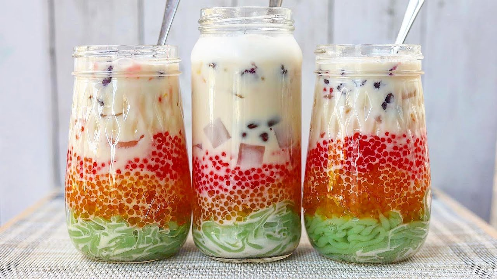

There are a variety of Hmong Food! Hmong people eat lots and lots of different delicious meals!
"Kho Pia" a handmade noodle dish. You mix the noodle powder from scratch! Then you add some salt and chicken flavor, boil the noodles and you're set to season and eat it!
Hmong Sausage: traditional Hmong sausage is the best to eat during Hmong New Year celebrations!
"Nava" a colorful, delicious and refreshing drink!

Eggrolls: Hmong eggrolls are highly famous! You definitely have to try some.
"Pho Kao" a dish that is very simple and easy to make, but very delicious. You add some grounded meat of your choice along with some green onions and cilantro wrapped with some steamed flour.
Papaya the Hmong people are known to eat spicy food. Papaya is one of the spiciest (depending on you choice of pepper quantity) dish there is. Definitely delicious!